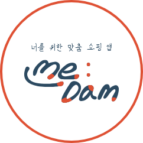
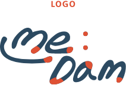
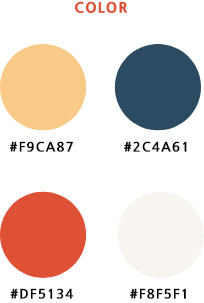
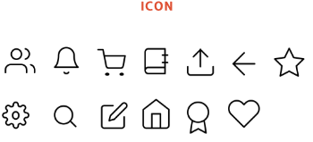
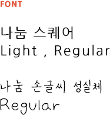

PROFILE
PACKAGE
UI/UX
WEB
IDENTITY
EDITORIAL

매일매일 질문을 통해 자신만의 쇼핑 리스트를
추천해주는 1인 맞춤 쇼핑 앱.
상품의 장점과 단점을 크게 볼 수 있어
보다 직설적이고 정확한 정보를 얻을 수 있음.

#부드러운 #생기있는 #포근한
나를 담다라는 뜻으로,
'나'의 영어인 Me와 '담다'의 담을 영어로 표현.
M에 선을 그어 웃는 얼굴을 형상화하였다.


